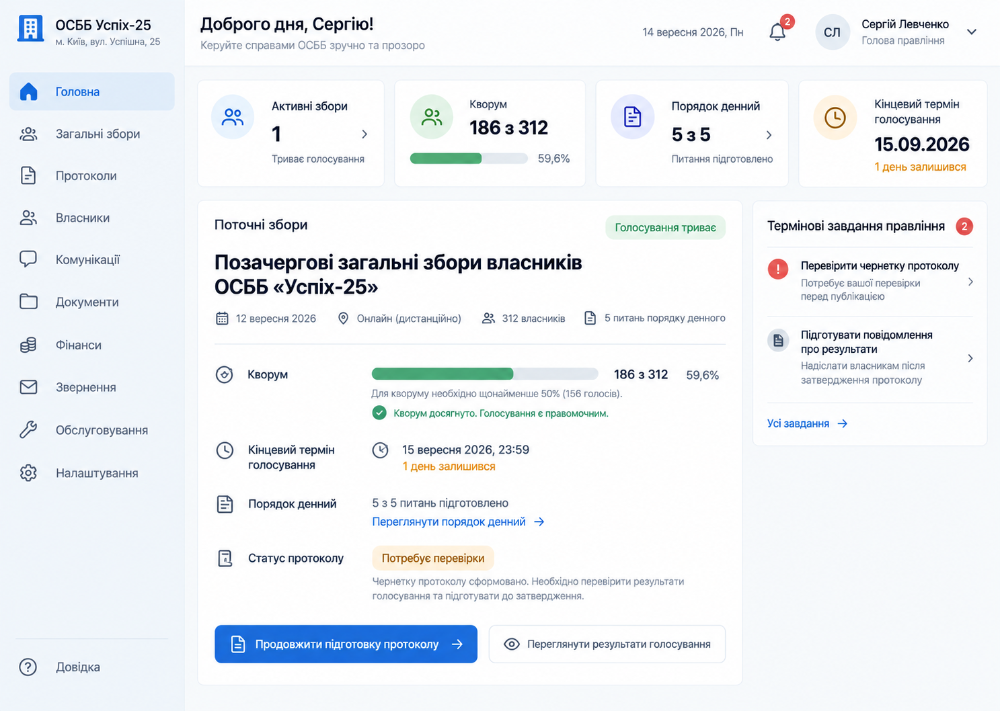
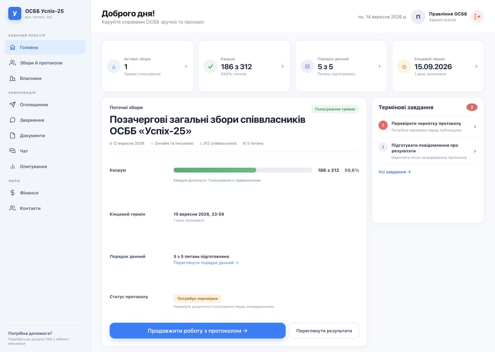

<!doctype html>
<html lang="uk">
<meta charset="utf-8">
<title>Design QA — ОСББ Успіх-25</title>
<style>
    * { box-sizing: border-box; }
    body { margin: 0; padding: 18px; background: #1b2430; color: white; font: 600 14px system-ui, sans-serif; }
    main { display: grid; grid-template-columns: 1fr 1fr; gap: 18px; align-items: start; }
    figure { margin: 0; }
    figcaption { margin: 0 0 8px; color: #dce6f2; }
    img { display: block; width: 100%; height: auto; background: white; border-radius: 8px; }
    .focus { height: 360px; overflow: hidden; border-radius: 8px; background: white; }
    .focus img { width: 150%; max-width: none; transform: translate(-18%, -22%); border-radius: 0; }
</style>
<main>
    <figure><figcaption>Джерело — обраний напрям №1</figcaption></figure>
    <figure><figcaption>Реалізація — browser render 1440 × 1024</figcaption></figure>
    <figure><figcaption>Фокус: збори, кворум і протокол — джерело</figcaption><div class="focus"></div></figure>
    <figure><figcaption>Фокус: збори, кворум і протокол — реалізація</figcaption><div class="focus"></div></figure>
</main>
</html>
